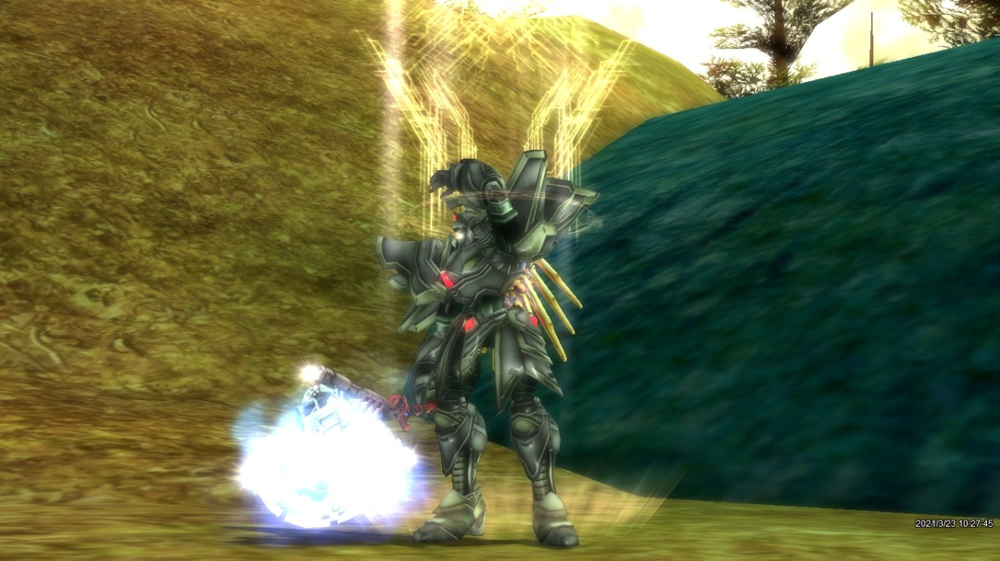

Em 2019
Por recomendação, descobri esse jogo, no inicio ja tinha achado muito interresante a ideia do jogo, e não demorou para eu viciar nele
Joguei até o ano de 2023, que foi quando a empresa que cuidava dos servidores oficiais brasileiros em que eu jogava, a 4Games, por pressão da nova empresa que comprou a antiga CCR que criou o Rf, a NetMarble mandou fechar todos os servidores oficiais da 4Games, onde os servidores, russo e europeu, também acabaram fechando
Durantes esses 4 anos de jogatina, fiz muitos amigos, ganhei e perdi dinheiro e no fim, acabou que até hoje ainda tenho vontade de jogar esse jogo, porém a cada dia, tenho menos tempo e vontade de jogar jogos